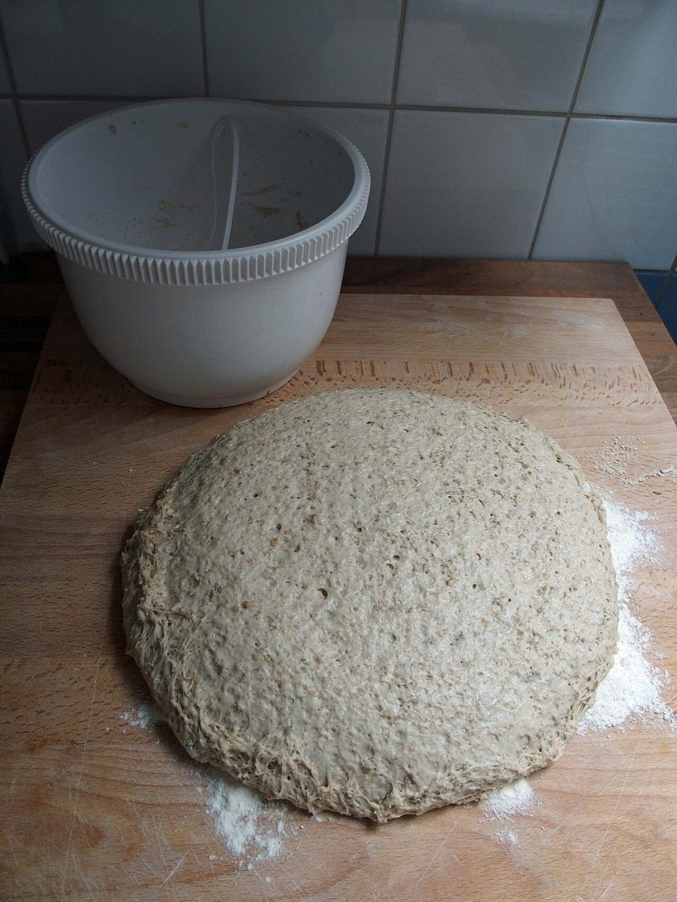
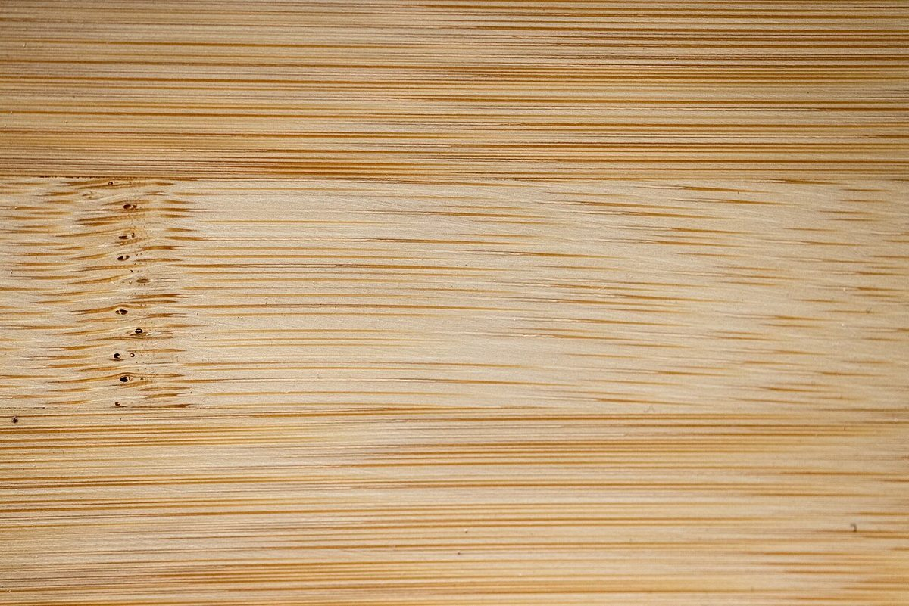

第二筒
店のこと
お店について確認できているのは、所在地・電話番号・Instagramのアカウントです。
確認できていること
- 店名は「コッペリータ 石川製パン工場」、業種はベーカリー
- 所在地は沖縄県うるま市石川東恩納654(〒904-1111)
- 電話番号は 080-8398-8686
- Instagramのアカウントは @agepan695
準備中のこと
- 営業時間・定休日
- メニュー・価格
- ご予約・駐車場
- お店の紹介文・こだわり
お店の方に確認できしだい、ここに入ります。
イメージ写真
お店の写真が入る場所
実際の店内・商品の写真は、お店ご提供のものに差し替えます。下の写真はフリー素材のイメージです。


